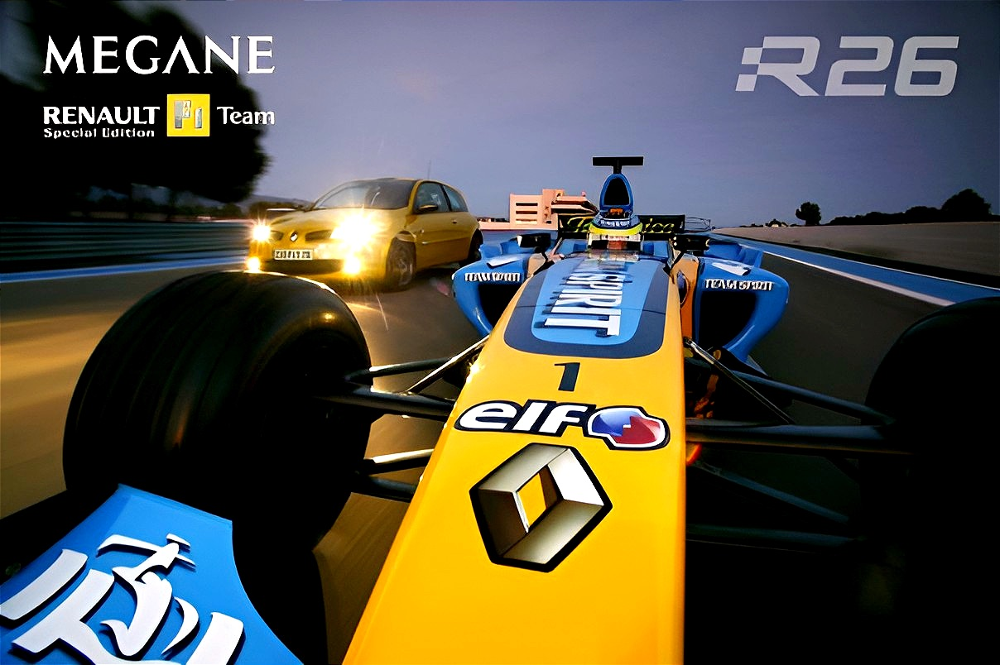
Megane R.S. · Renault F1 Team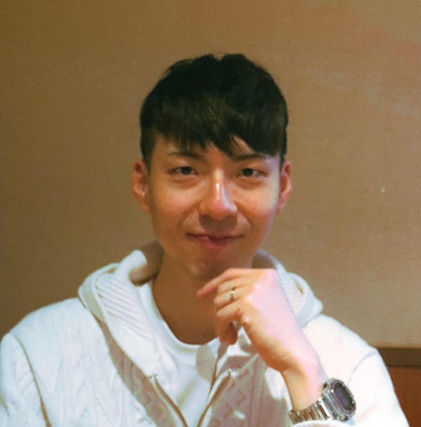
먼저 말을 거는 사람입니다. 지난 10년은 낯선 사람에게 먼저 인사하고, 그 대화에서 상대가 무엇을 원하는지 알아채는 일로 채웠습니다. 이 경험이 왜 차를 다루는 일에 필수적인지부터 말하겠습니다.
모든 진단은 대개 고객의 말에서 시작됩니다. “주행 중에 웅웅 소리가 납니다”라는 한 문장에서 어느 계통을 먼저 점검할지가 갈립니다. 고객의 일상적인 표현을 정확한 기술적 단서로 캐내는 일은 결국 사람을 다루고 이해하는 능력에서 나옵니다.
대학 시절부터 부산 현장에서 일했습니다. BMW 이벤트 부스와 백화점 프로모션, 벡스코 컨벤션, 호텔 연회장, 콘서트 경호 등 사람이 몰리는 곳에서 안내하고 현장의 질서를 잡았습니다. 영어회화 모임에서는 참가자 겸 스태프로 활동했고, 의무경찰(타격대) 복무 후 대학을 졸업했습니다. 낯선 사람에게 먼저 다가가는 습관은 이때 몸에 단단히 붙었습니다.
사람만 상대한 것은 아닙니다. 직업전문학교에서 680시간 동안 마케팅과 콘텐츠 제작을 이수하고, 실무에 뛰어들어 MD 업무, 재고·택배 관리, 상품기획, 네이버 스토어 운영까지 직접 수행했습니다. 상품이 기획되어 고객의 손에 도착하기까지의 전체적인 실무 흐름을 끝까지 책임진 시기였습니다.
그 뒤 3년 2개월은 은행 보안요원으로 한 자리에 섰습니다. 하루 종일 다양한 고객을 대면하는 이 업무가 차와 무관해 보일 수 있지만, 실제 현장에서 요구되는 역량은 정확히 일치합니다.
고객이 온 목적을 빠르게 파악하고, 돌발 상황에서도 침착하게 일의 순서를 정하며, 처리된 내용을 정확히 보고하는 일입니다. 창구에서 고객의 요구를 ‘증상’으로 바꿔 듣는 훈련을 3년 넘게 매일 반복했고, 내용을 정확히 남기지 않으면 다음 작업자가 이어받을 수 없다는 현장의 철칙도 체득했습니다.
일 밖에서는 늘 직접 기계를 만졌습니다. 내 차(SM7)의 기본 점검과 소모품 관리를 직접 하고, PC는 부품을 구해 직접 조립합니다. 기계를 뜯어 구동 원리를 두 눈으로 확인하는 편이 설명을 듣는 것보다 언제나 빨랐습니다.
이 관심은 자연스럽게 직업의 방향이 되었습니다. 올해 자동차진단평가사 2급을 취득했고, 2027년 2월 자동차정비산업기사(과정평가형) 취득을 목표로 현재 1,200시간의 전문 과정을 이수 중입니다. 구동·섀시 계통부터 가솔린·디젤 전자제어, 차량 네트워크 통신, 전기차 특화시스템과 고전압 배터리까지 깊이 있게 파고들고 있습니다.
단순히 배우는 것으로 부족해, AI와 협업하여 3가지 진단 및 학습 솔루션을 직접 만들었습니다.
특히 DR-9180은 차량의 상태를 항목별로 확인하고 결과를 화면에 남기는 구조로 설계했습니다. ‘판정에는 근거가 따라붙어야 하고, 그 근거는 기록으로 남아야 한다’는 생각은 도구 설계에도 그대로 들어갔습니다.
지금 가장 먼저 가고 싶은 곳은 차량 진단·평가 현장입니다. 자동차진단평가사 자격은 그 방향을 향한 첫걸음이었고, 현재의 정비 과정은 판정의 기술적 근거를 단단하게 채우는 단계입니다. 차량을 확인해 결론을 내리고, 그 결론을 고객이 완벽히 이해할 수 있게 전달하는 일. 이 과정은 제가 은행 창구에서 고객의 말을 증상으로 바꿔 듣던 3년 2개월의 시간과 크게 다르지 않습니다.
ADAS 테스트와 서비스센터 테크니션 역시 같은 축 위의 다른 지점입니다. 시험 조건을 지키고 결과를 정확히 기록해 온 경험이 있고, 증상을 원인까지 좁히는 논리적 사고는 지금 훈련에서 탄탄하게 다지고 있습니다. 차와 컴퓨터를 함께 다루는 일이라면 부산, 김해, 창원, 경주 어디든 바로 출퇴근하며 성과를 낼 준비가 되어 있습니다.
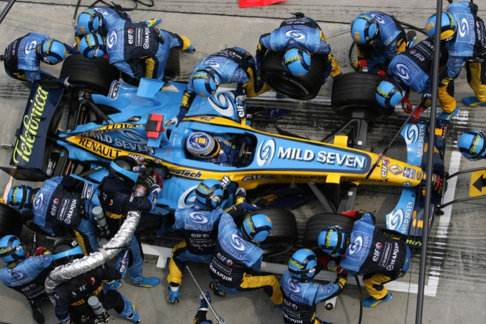
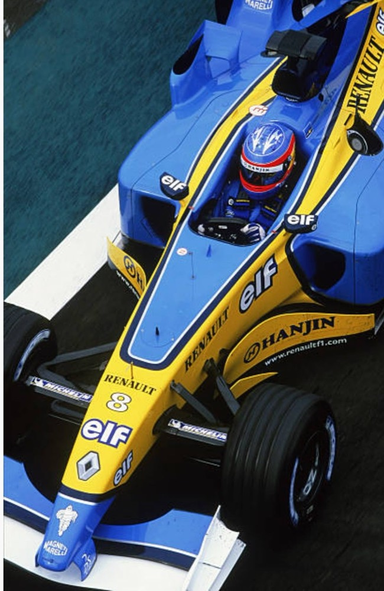
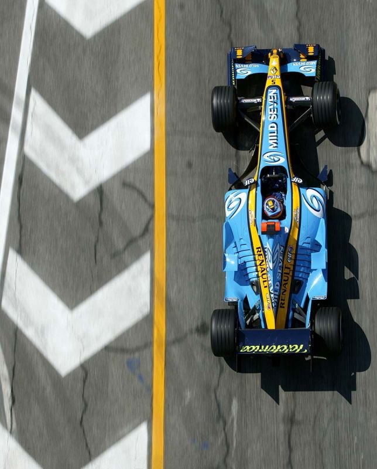
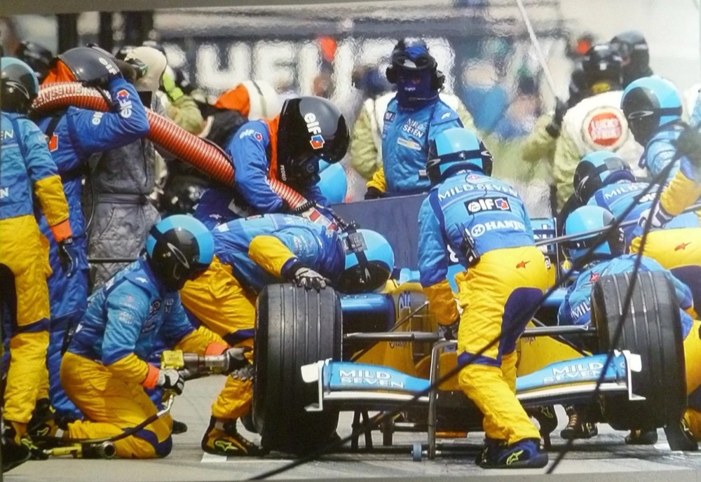
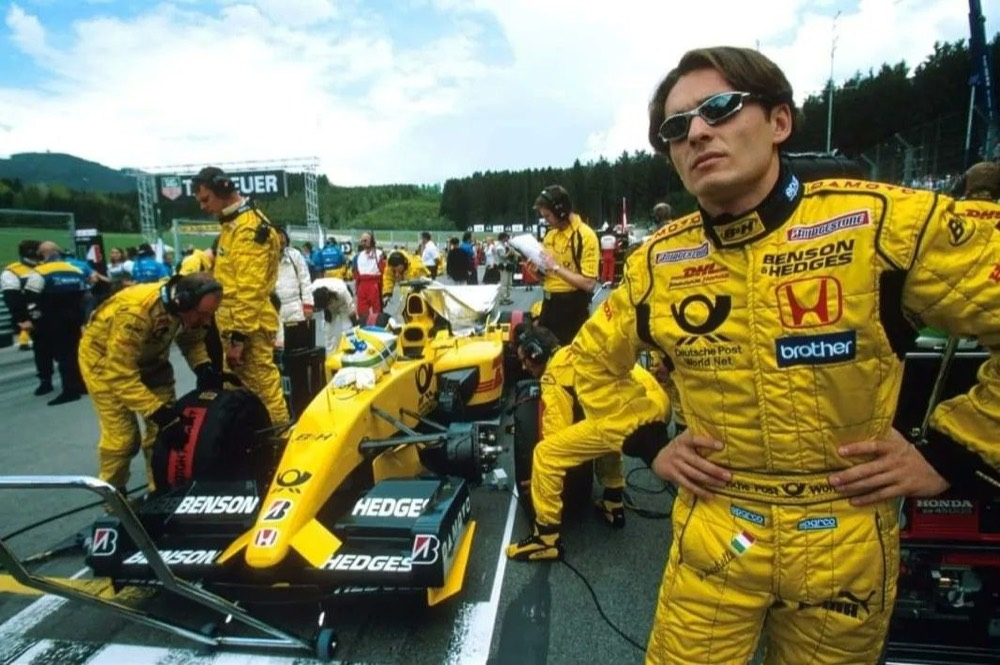
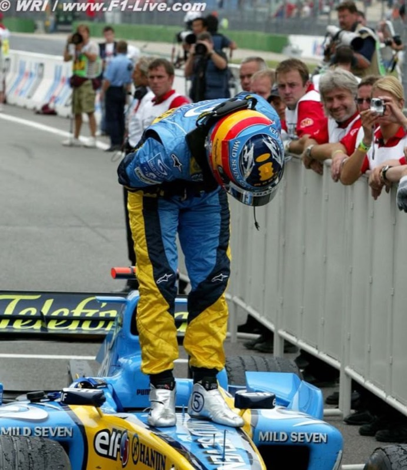
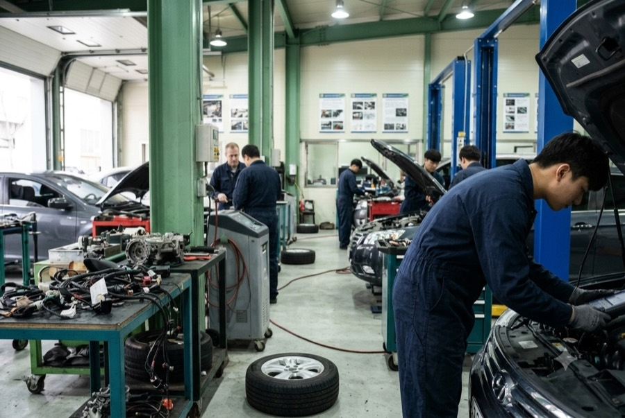
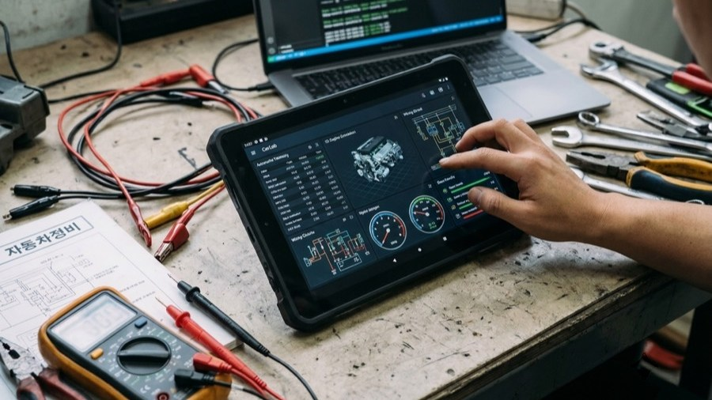
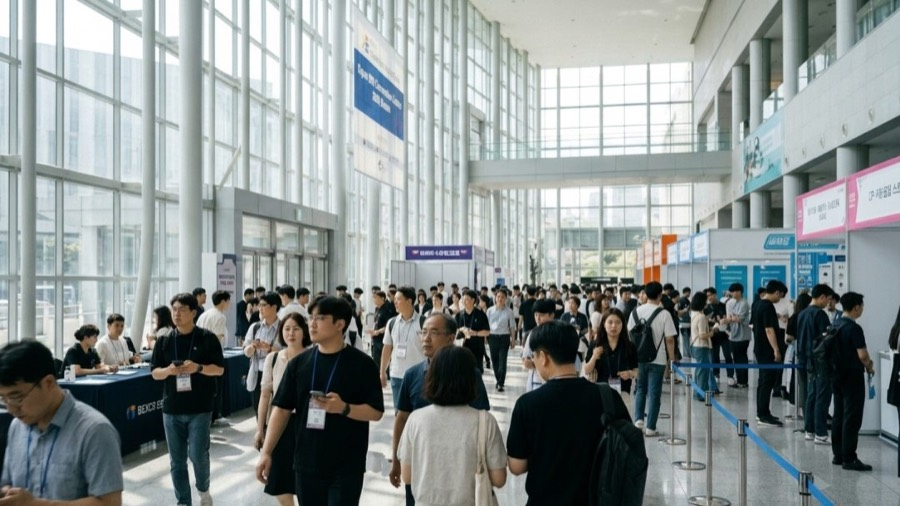
현장 즉시 투입을 위한 실무 중심의 자동차 정비 및 시스템 제어 훈련 과정입니다. 자동변속기, 현가·조향·제동, 전자제어, 배출가스, 냉난방·편의장치, 네트워크 통신, 전기·전자회로, 전기자동차·고전압 장치를 이수 중입니다.
자동차 정비고장 진단 및 시스템 분석차량 진단 평가전기전자 회로 분석주도적 문제 해결'국제관광마케팅·관광MICE·컨벤션실무' 실무 과정을 수료했습니다. SNS·검색광고를 직접 집행하고, 포토샵·일러스트·영상 도구로 콘텐츠를 제작했습니다.
전공은 러시아어입니다. 활동: 부산대 온천장 걷기모임, 컨텍스트 독서모임, 그림그리는 모임. 사람을 만나 이야기하고 마음이 통하면 나이와 성별에 상관없이 친구가 되는 것이 가끔 힘이 됩니다.
텍스트 위주의 정비 학습 한계를 넘기 위해 직접 기획·개발한 웹 플랫폼입니다.
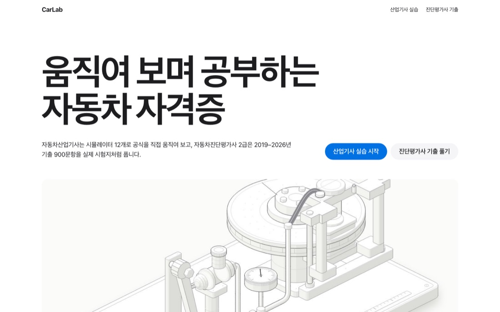
과정평가형 주관식·객관식 380문항과 도표·이미지 자료를 디지털로 자산화한 자체 제작 학습 플랫폼입니다(바이브 코딩으로 제작).
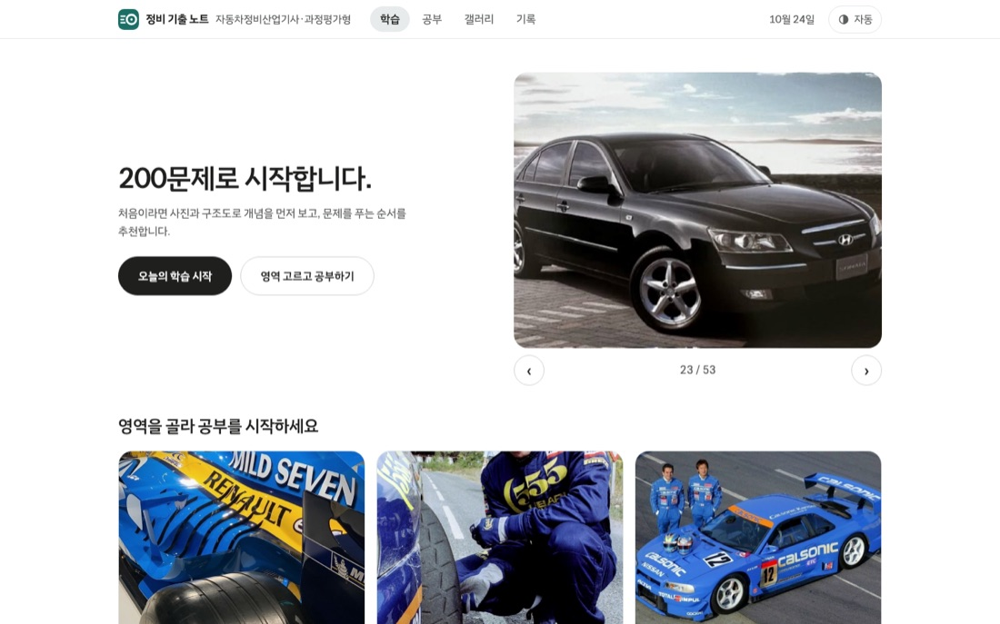
레트로 하드웨어 감성을 적용했고, 차량 제원 조회, 상태 진단, 수리비 산출, 차량 비교 및 데이터 분석(5채널 시스템) 기능을 갖췄습니다.
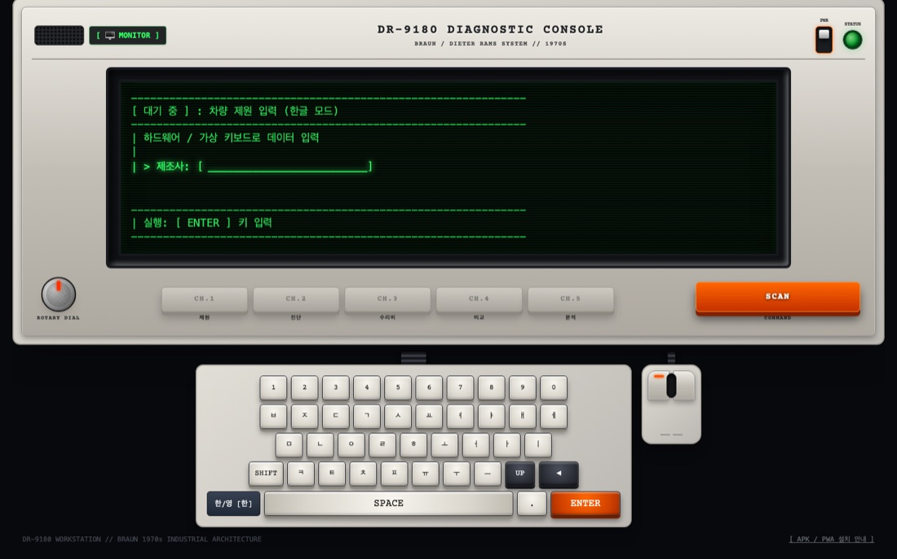
캡스톤디자인 실기수업에서 제작했습니다. 투입 인원 8명, 제작비 10만원. 영상 보기
'러시아 문학의 이해' 수업 과제로 제출한 니콜라이 고골의 「외투」 독후감이 담당 교수님의 추천으로 교내 공모전에 출품되어 우수독후감으로 선정됐습니다. 대학 4년 동안 받은 유일한 상장입니다.
독후감 요지 외투는 주인공 아카키의 상태와 같은 것으로 읽힙니다. 같은 부서 동료에게는 사람을 판단하는 기준이었고, 호통을 친 고위관직에게는 속죄의 상징이었습니다. 작가는 외투를 통해 물질이 사람의 삶에 미치는 영향을 말한다고 썼습니다.
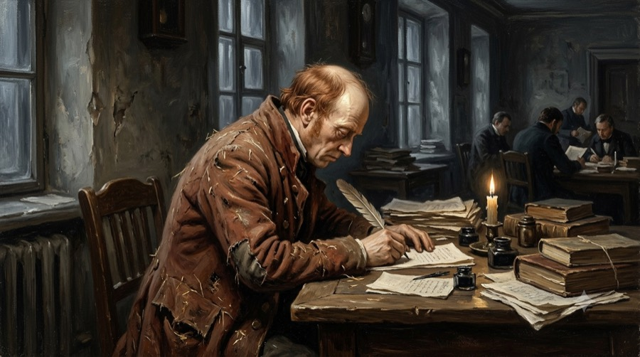
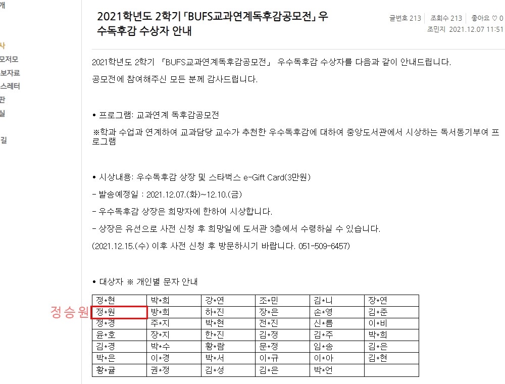
I am the one who initiates the conversation. Over the past 10 years, I have made it a habit to greet strangers first and identify their needs through conversation. Let me explain why this experience is essential in the automotive field.
Most diagnostics begin with the customer's words. A single sentence like, “I hear a humming noise while driving,” determines which system to inspect first. Extracting accurate technical clues from a customer's everyday language is ultimately about understanding and connecting with people.
I have worked in various field operations in Busan since college. I guided crowds and maintained order at BMW event booths, department store promotions, BEXCO conventions, hotel banquets, and concert security. I also participated in an English conversation club as both a member and staff, and graduated from university after completing my military service in the Auxiliary Police (Strike Force). The habit of proactively approaching people became deeply ingrained in me during this time.
I didn't just deal with people. I completed a 680-hour course in marketing and content creation at a vocational training school and gained hands-on experience in merchandising, inventory/shipping management, product planning, and operating an online commerce store. This was a period where I took full responsibility for the entire workflow, from product planning to final delivery to the customer.
After that, I worked in one position for 3 years and 2 months as a bank security officer. Interacting with a diverse range of customers all day long might seem unrelated to cars, but the core competencies required in the field are exactly the same.
The role involves quickly identifying the customer's objective, calmly prioritizing tasks even in unexpected situations, and accurately reporting the outcomes. For over three years, I trained daily to translate customer requests at the counter into ‘symptoms’, and I learned the strict field rule that if details aren't recorded accurately, the next person cannot take over the workflow.
Outside of work, I have always been hands-on with machines. I perform basic maintenance and manage consumables for my own car (SM7), and I source parts to build PCs myself. Seeing the mechanical principles with my own eyes by taking things apart has always been faster for me than just listening to explanations.
This interest naturally became my career direction. I earned the Level 2 Vehicle Diagnostic Evaluator certification this year, and I am currently completing a 1,200-hour specialized course with the goal of acquiring the Automotive Maintenance Industrial Engineer certification by February 2027. I am diving deep into drivetrains, chassis systems, gasoline/diesel electronic controls, vehicle network communications, EV-specific systems, and high-voltage batteries.
Simply learning wasn't enough, so I collaborated with AI to develop three diagnostic and learning tools myself:
In particular, I designed DR-9180 to check the vehicle's status by category and log the results on the screen. The principle that “every judgment must be backed by evidence, and that evidence must remain as a record” was directly embedded into the design of this tool.
The place I want to be first is the vehicle diagnostics and evaluation field. The Vehicle Diagnostic Evaluator certification was my first step in that direction, and my current maintenance training is the phase of solidly building the technical foundation for those judgments. Identifying the issue, reaching a conclusion, and communicating that conclusion so the customer can fully understand it—this process is no different from the 38 months I spent at the bank translating customer words into actionable symptoms.
ADAS testing and service center technician roles are on the same axis. I have experience strictly following test conditions and accurately recording results, and my logical thinking—narrowing down symptoms to the root cause—is being sharpened through my current 1,200-hour training. If it's a role that bridges cars, computers, and people, I am fully prepared to commute anywhere across Busan, Gimhae, Changwon, or Gyeongju, and deliver immediate results.
A practice-oriented programme in automotive maintenance and system control, designed for immediate on-the-job work. I am currently studying automatic transmissions, suspension, steering and brakes, electronic control, emissions, HVAC and comfort systems, in-vehicle networks, electrical and electronic circuits, and EV and high-voltage systems.
Automotive maintenanceFault diagnosis & system analysisVehicle diagnosis and appraisalElectrical circuit analysisInitiative in problem solvingI completed a practical course in international tourism marketing, MICE and convention operations. I ran SNS and search advertising campaigns myself and produced content with Photoshop, Illustrator and video tools.
My major was Russian language. Activities: a walking group at Busan National University's Oncheonjang, a reading group, and a drawing group. Meeting people, talking with them, and becoming friends regardless of age or gender when you connect — that is sometimes what keeps me going.
A web platform I planned and developed myself to go beyond text-heavy maintenance study material.
A self-built study platform that turns 380 short-answer and multiple-choice questions, together with diagrams and images, into a digital asset (built with vibe coding).
It has a retro hardware aesthetic and combines vehicle specification lookup, condition diagnosis, repair-cost estimates, vehicle comparison and data analysis (a five-channel system).
Produced for a capstone design practical course. Eight people involved, KRW 100,000 budget. Watch the film
A book report on Nikolai Gogol's "The Overcoat", submitted for a 'Understanding Russian Literature' class, was entered into the university contest on my professor's recommendation and selected as an excellent book report. It is the only award I received in four years of university.
Summary of the report The overcoat is read as the same thing as the protagonist Akaky's own condition. To his colleagues it was a yardstick for judging a person, and to the high official who berated him it became a symbol of atonement. I wrote that the author uses the coat to show how material things shape a person's life.